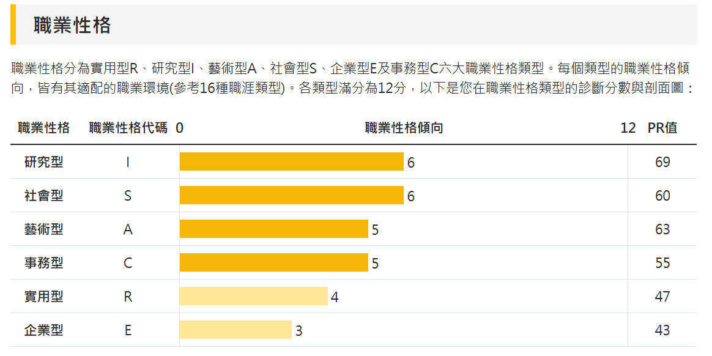

測驗一：UCAN職業興趣測驗

主要性向：IS型（研究型 + 社會型）
性格描述：好奇分析、謹慎條理、理性獨立、合作、友善、助人、負責、善社交、圓融
適合職業：自然科學、數學教師/學術研究人員/資訊顧問 / 教育訓練講師
施測日期：2023年10月02日
詳細報告：下載PDF檔案
測驗二：Career

主要特性：指導性、柔軟性
性格描述：在付諸行動之前，需要花費相當時間，但開始行動後，卻能踏實確切去執行。
適合職業：專案經理/資訊解決方案顧問
施測日期：2025年03月12日
詳細報告：下載PDF檔案